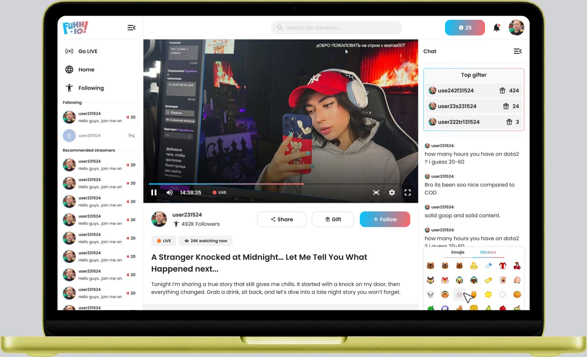
FUHH.IO: A Live Streaming App Where Viewers Change the Stream
FUHH.IO is a live streaming app, like Twitch, with one big difference: viewers' gifts change what happens on stream. A streamer can set a challenge, such as hitting a gift target before the timer runs out or the stream drops to lower quality, and the whole audience works together to beat it.
I designed the whole thing, for both viewers and streamers, in one month. With no time to redesign a screen twice, I built the shared pieces first and made every screen from them.
My Role
Product Designer (UI/UX)
What I worked on
- The live viewing experience
- The challenge system and its rules
- Gifts and the virtual currency
- Streamer setup and broadcast controls
- Channel pages and discovery
- Live overlays and chat
- Layouts for desktop and phone
Goals
I wanted viewers to feel part of the stream, not just an audience in front of it.
The experience had to be
- Familiar to anyone who already watches Twitch or Kick
- Truly interactive, not passive
- Fun to take part in, not just to pay for
- Clear enough that new viewers get it straight away
- Flexible enough for streamers to set the difficulty
The goal wasn't more ways to spend money. It was making spending feel like joining in.
Background
FUHH.IO entered a market already shaped by Twitch, Kick and Bigo Live.
On those platforms, interaction mostly goes one way. The streamer broadcasts, viewers watch, and the chat runs beside the video. Gifts exist, but they work like tips: an animation plays, a name scrolls by, and nothing about the stream changes.
FUHH.IO connects gifts to live challenges, so what the audience sends actually changes the stream.
The platform covers
- Live streams and channel pages
- Real-time chat and reactions
- Gifts and a virtual currency
- Time-based and interaction-based challenges
- Top gifter leaderboards
- A streamer dashboard and broadcast controls
I designed both sides end to end: what viewers see, and what streamers use to run their show.
Problem
Most streaming platforms try to drive engagement the same way: a chat box and a gift animation.
That leads to the same problems again and again
- Viewers have no real influence on the stream
- Gifting feels like paying, not taking part
- Smaller streamers struggle to create memorable moments
- Chat goes quiet during slow parts
- New viewers have no reason to stay
Without something to do together, an audience drifts, and the stream turns into background noise.
I needed to give the audience something real at stake, without turning the stream into a paywall.
Before vs After
Solution
I turned gifting from a tip jar into the engine of a live challenge.
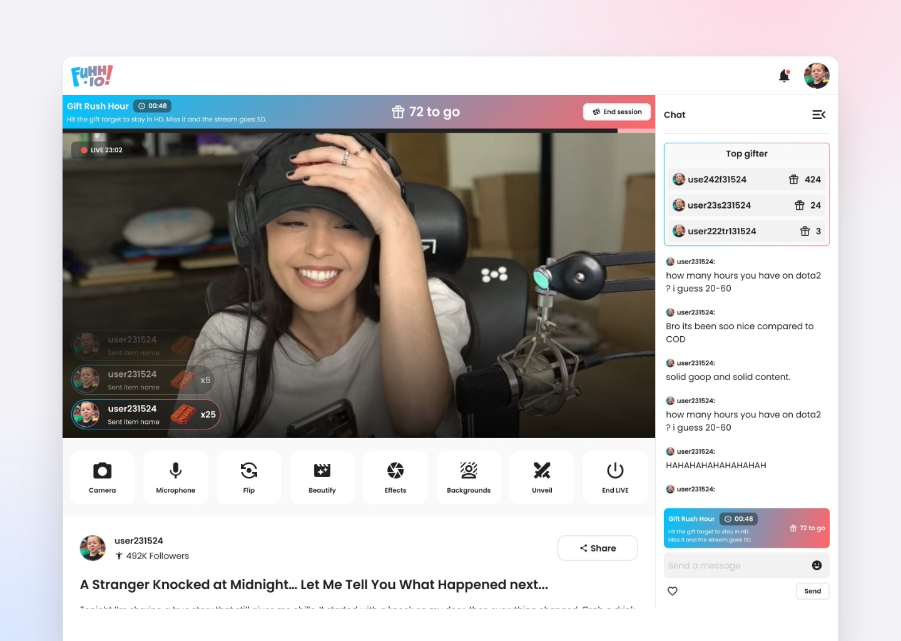
Before a challenge goes live, the streamer sets
- A target: how many gifts the audience needs to send
- A time limit: how long they have to reach it
- A consequence: what happens if they miss
Gift Rush Hour shows how it works. The streamer sets a gift target to keep the stream in full quality. If viewers miss it in time, the stream drops to SD until they reach the target again. The streamer sets the difficulty, and the audience decides the outcome.
There are two kinds of challenge
- Time challenges: a countdown with a target to reach before it ends
- Interaction challenges: goals reached by taking part, like chat activity, reactions or several viewers gifting together
How I designed them
- The challenge is always visible, without covering the stream
- Progress can be read at a glance
- The consequence is explained in plain words before it starts
- Setup is quick enough to start in the middle of a stream
- Every challenge type uses the same pattern, so new ones feel familiar
Every gift became a move in a game the whole room is playing.
Discovery
I started by studying how the big platforms lay out a stream, and where interaction lives.
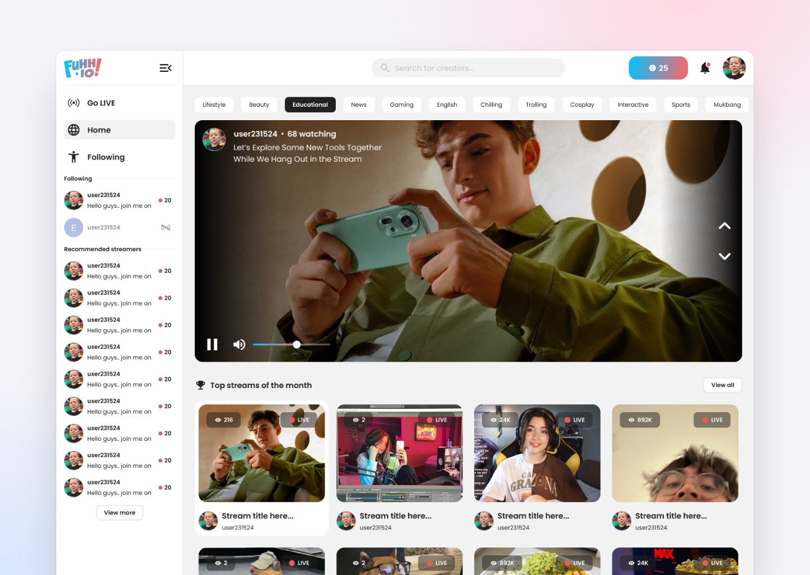
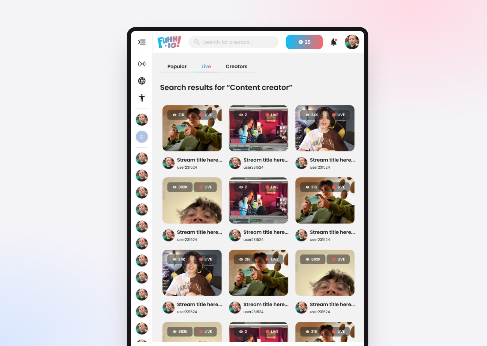
I looked closely at
- Where the player and chat usually sit
- How gifts and donations are shown
- How crowded the screen gets at busy moments
- How leaderboards and recognition work
- What changes between desktop and phone
What stood out
- Familiar layouts are strong and worth keeping
- Gift moments are loud but over in seconds
- Recognition matters more to gifters than the animation
- Audiences get most involved when something is at stake
The most useful insight: viewers don't want more buttons. They want a reason to press the ones that are already there.
So instead of adding more interface, I focused on adding real consequences.
Competitor Research
Twitch
- Large, established creator community
- Strong moderation and channel tools
- Familiar, well-established layout patterns
- Interaction mostly limited to chat
- Interactive features require third-party extensions
- Hard for smaller streamers to stand out
Kick
- Creator-friendly revenue model
- Clean, uncluttered viewing interface
- Fast-growing and less saturated
- Limited native interaction mechanics
- Engagement still depends on chat volume
- Fewer tools for creating live moments
Bigo Live
- Strong gifting and virtual currency economy
- Effective recognition and ranking systems
- Mobile-first experience done well
- Gifting rarely changes what happens on stream
- Overlays can overwhelm the video
- Monetisation can feel aggressive to new viewers
Research
Then I dug into what actually makes viewers join in, and where they stop.
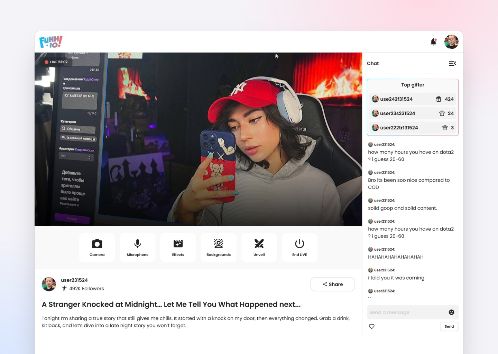
What I found
- Shared goals get people involved more than personal rewards
- Seeing progress makes people want to contribute
- Unclear consequences make people hold back
- Recognition keeps people gifting longer than animations do
- Too many prompts, and people ignore all of them
Timing mattered as much as the mechanics. A challenge during a quiet moment brings the stream back to life. The same challenge during a busy moment just fights for attention.
The best interaction builds momentum together, instead of one person spending alone.
Challenges
The hardest problem was fitting everything on one screen.
The video, chat, gift feed, leaderboard and the live challenge all compete for space, and all of them update in real time. With only a month, I couldn't explore a direction, throw it away and start again, so I had to explore and decide at the same time.
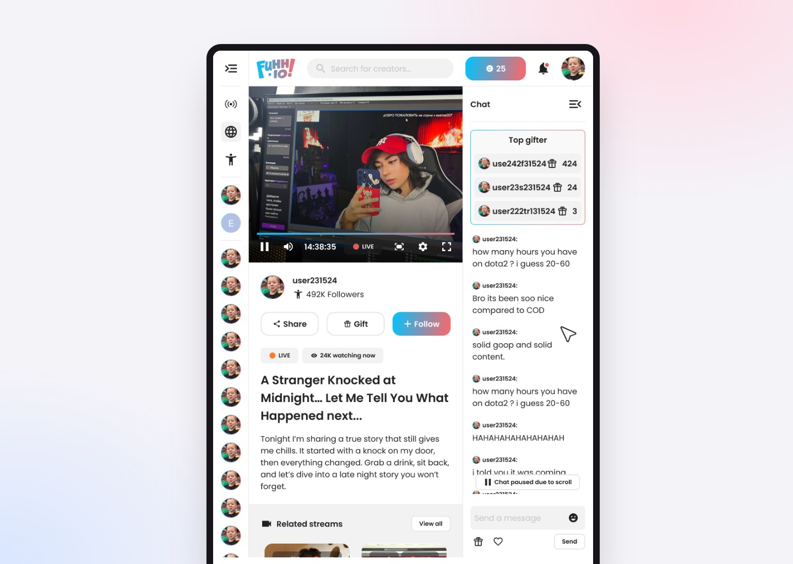
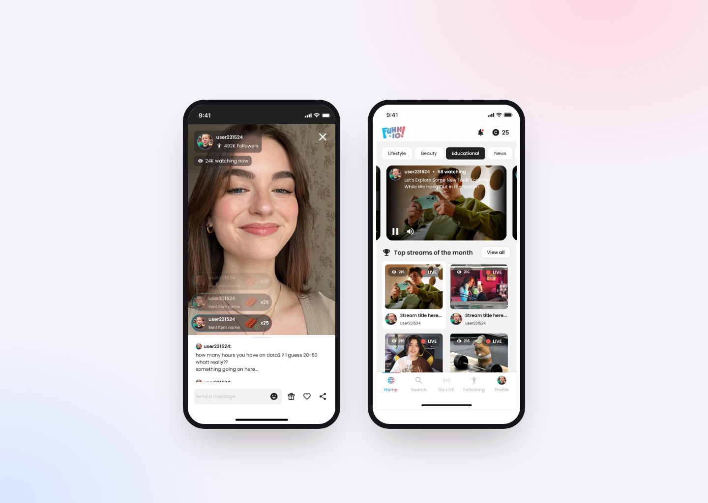
Other things I had to balance
- Making consequences feel real without punishing viewers who can't spend
- Keeping setup fast enough to run mid-stream
- Keeping every stage of a countdown easy to read
- Fitting the same system into a much smaller phone screen
- Covering both viewer and streamer screens within the month
Urgent but clear. That balance was the hardest part of the project.
Exploration
I explored several ways a challenge could look and behave before choosing one.
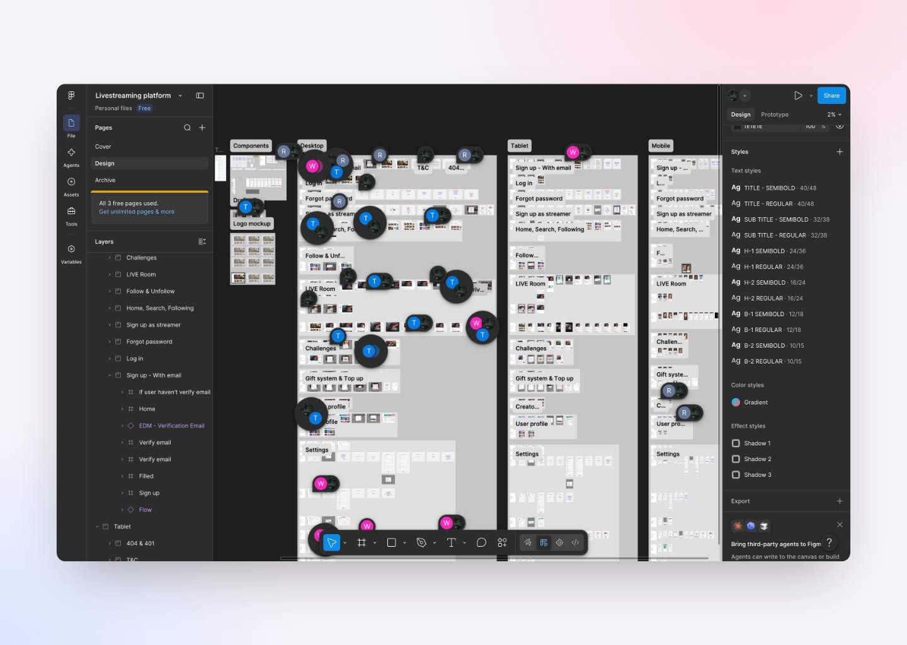
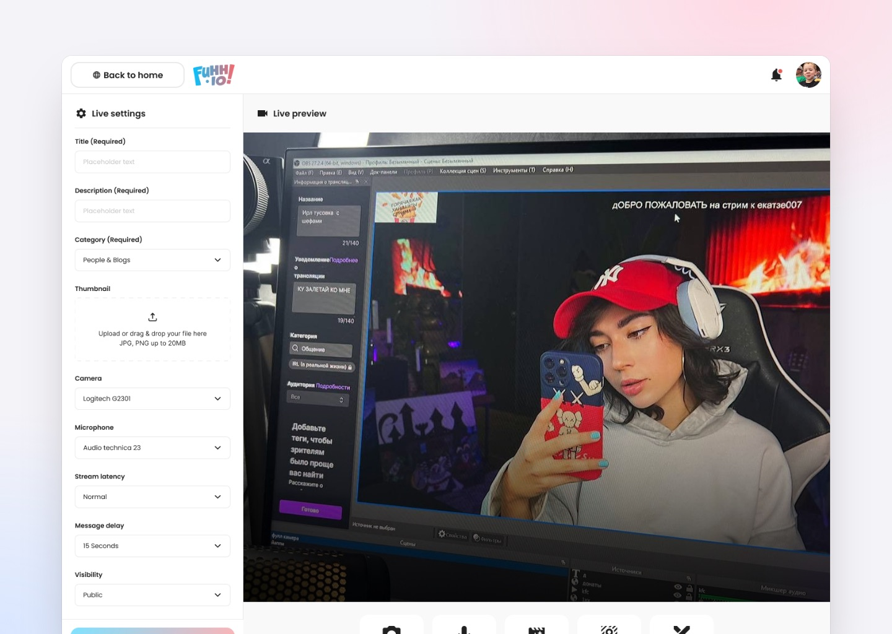
Every choice came back to one rule: keep the challenge readable without stealing attention from the stream.
Design System
New challenge types would keep coming, so I designed a structure they could slot straight into.
This included
- One challenge card and setup window that every type reuses
- Shared progress, countdown and target pieces
- Consistent gift and currency elements
- Clear rules for which overlay sits on top
- One color system for active, at-risk and failed states
- Text sized to stay readable over moving video
A new challenge type became a setup task, not a redesign.
Design
The final design keeps the streaming layout people already know, and builds the interaction into it carefully.
Key decisions
- The familiar player and chat layout, kept intact
- A top gifter leaderboard where everyone can see it
- The challenge always in the same spot on the player
- Streamer controls one tap away during a broadcast
- Gifting without leaving the stream
- A phone layout with the same priorities in less space
Keep attention on the stream, and make joining in effortless.
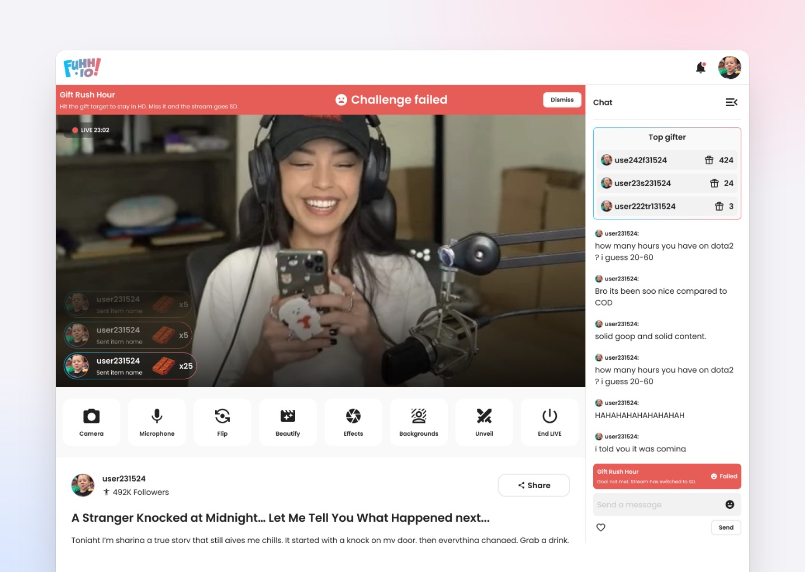
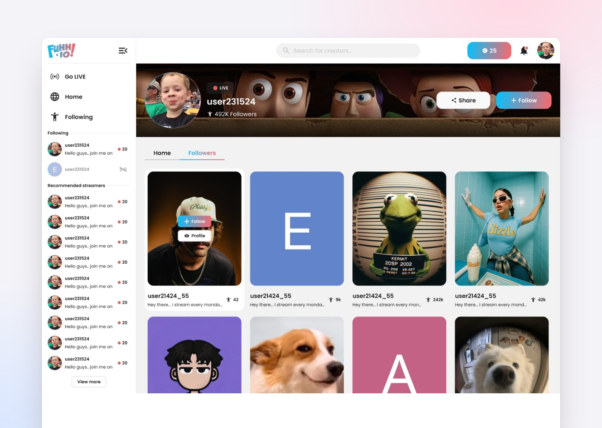
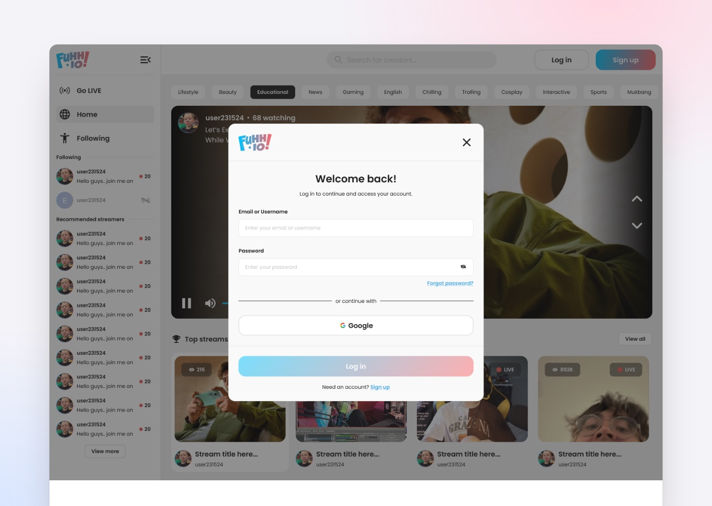
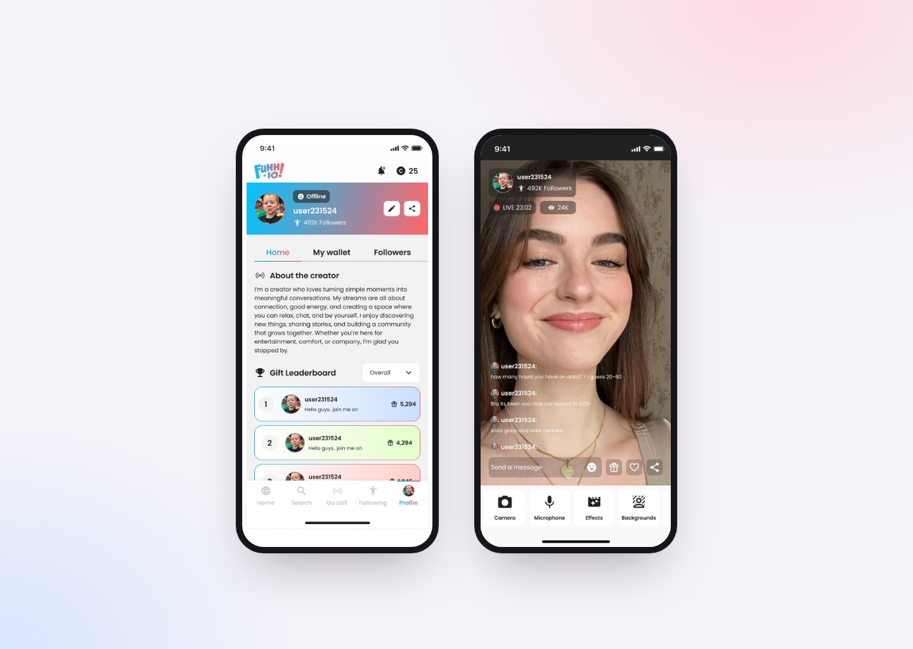
Outcome
On FUHH.IO, the audience has a direct, visible effect on the stream.
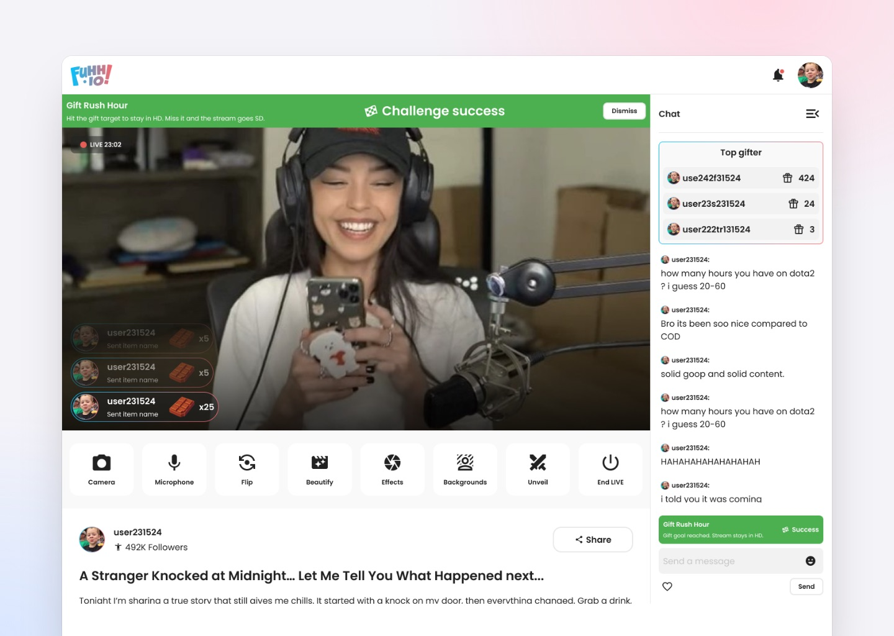
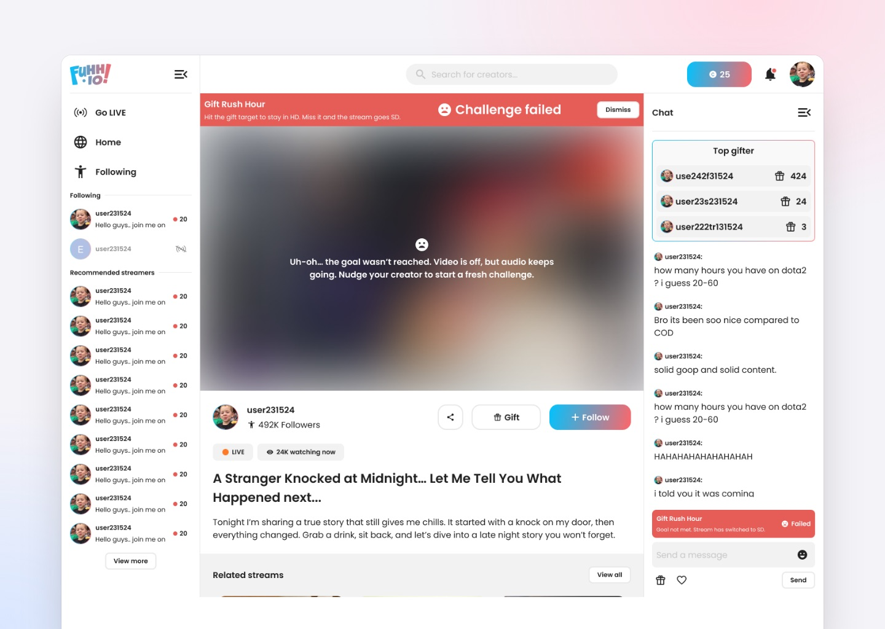
Because gifts are tied to goals everyone can see, spending becomes something the room does together. Viewers who don't spend still take part through chat and reaction challenges, so the audience stays one group instead of splitting into payers and watchers.
The challenge framework also gives the team a repeatable way to launch new mechanics without rebuilding the interface.
Key Takeaways
FUHH.IO taught me that engagement isn't a feature you add. It's a consequence you design in.
Chat, reactions and gifts already existed on every platform. What made the difference was connecting them to an outcome the whole audience could watch unfold.
It also pushed me to design for live conditions instead of still screens. An interface sitting over moving video, with several things updating at once, has to treat attention as precious.
Respecting what viewers already expect mattered just as much. Keeping the player, chat and gifts where people look for them made the new mechanics feel natural, not like something new to learn.
And the one-month timeline changed how I work. With no time to design a screen twice, building the shared structure first and treating each screen as a version of it turned out to be the fastest route.
What I took away
- Designing consequences, not just interactions
- Treating attention as precious in live interfaces
- Balancing urgency with clarity
- Building systems that grow with new mechanics
- Respecting habits people already have
- Making firm decisions on a tight timeline